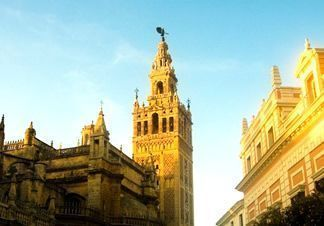

¡¡CONOCE ESTA C EN ESTA PÁGINA!!
<
>
ENLACES
GIRALDA DE SEVILLA
La Giralda es una de las atalayas más privilegiadas que tiene Sevilla, es uno de sus símbolos por antonomasia. Reconocible en el mundo entero, su silueta ha inspirado multitud de obras de arte e, incluso, monumentos muy similares, casi gemelos, haciendo que cualquier persona, aunque nunca haya estado en Sevilla, rápidamente lo reconozca. Es además uno de los monumentos árabes más conocidos. 